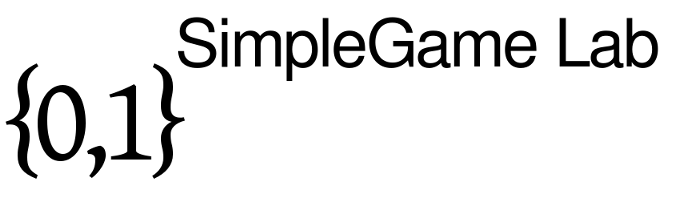

|

Welcome to the Simple Game Laboratory, a playground for Simple Games and Multiple Weighted Voting Games in particular. The aim of this project is to solve some problems and answer questions which naturally arise when working with simple games. or
(May take a few seconds to load; "Enter" opens the lab in a new window)
As a web application entirely written in JavaScript the laboratory works out of the box without any additional software except a modern web browser like Mozilla's Firefox or Google's Chrome. News
FeaturesGiven any number of weighted voting games, the laboratory can handle any simple games built from them using conjunction and disjunction. That includes multiple weighted voting games. Features include but are not limited to:
DocumentationThere is little documentation on the terms used in the laboratory. See here (opens in new window). There is currently no source code documentation available. However, important parts of the source code are documented well. A good starting point is the file js/core/SimpleGame.js and the constructor SimpleGame. Embedding into external ProjectsIt it sometimes convenient to use the functionality of the laboratory without a web browser from the command line or in an external program, for instance, on a web server. There are both libraries such as Mozilla SpiderMonkey and Google v8 which can be used to embed JavaScript into other programming languages such as C or C++ as well as JavaScript interpreters or shells such as the JavaScript shell which is shipped with Mozilla SpiderMonkey. At this point we will give a short example how the latter shell can be used to load the laboratory and do tasks. We assume you have already installed the JavaScript shell as js on your system. The laboratory comes with a dedicated file embed/lab.js which can be used here. The file contains a singleton called Lab which has a init method which has to be called to load the library. The init function will load any files necessary (including external libraries such as closure and jshashtable). The arguments to init are the directories of the libraries and an optional load function that has to be used to load the .js files. By default the global function load is used which is provided by some JavaScript shells. For example, the library can be initialized using the lines: var src_dir = "/home/stb/workspace/lab"; Lab.init(src_dir, src_dir, src_dir);To read a file, SpiderMonkey' shell provides a function read(filename). The following code loads a game from a file and writes the models of its shift-minimal winning coalitions to the standard output. The format is the same as in the online version.
try {
var gameStr = read (<your-file.game>);
// Parse and load the game. The returned object is of type SimpleGame.
var game = parse_mwvg (gameStr);
// List all models of the shift-minimal winning coalitions.
var models = game.getShiftMinWinModels ();
for (var i in models) {
print ('(' + models[i] + ')');
}
}
catch (e) {
if (e instanceof ParserException) {
print ("Unable to parse game. Reason: " + e);
}
else {
print ("Unknown error. Details: " + e);
}
}
From the command line, use:
$ js -f /home/stb/workspace/lab/embed/lab.js -f <your-file.js>Two rules of thumb for SpiderMonkey. 1. If SpiderMonkey says "out of memory", the internal runtime created by the shell is too small (160 MiB by default). Unfortunately, this value cannot be changed dynamically such that the shell has to be recompiled in order to change it. E.g., you could include limits.h and pass UINT_MAX to JS_NewRuntime. 2. It usually is much faster to enable the optimizations offered by the JavaScript shell. See for details: $ js --help ContributeThere are some ways to contribute to this project:
Download the Source CodeEven though this software is written in Java Script, the files available online may be compressed and/or compiled using, for instance, the Closure Compiler, so that they are hard to read and understand for humans. The following archive(s) contain all source files necessary to run the laboratory on your computer, except third-party libraries.
file:///home/your_name/simple_games_lab-<version>/index.html
in your web browser.
AcknowledgementsThis project is supported by the German Research Foundation (Grant BE 4206/1-1) and it is part of SSEAC. We would also thank the authors of the following third-party libraries which are used:
LicenseThis software is licensed under the GNU General Public License Version 3 or later. Third-party libraries and code may have its own license. |